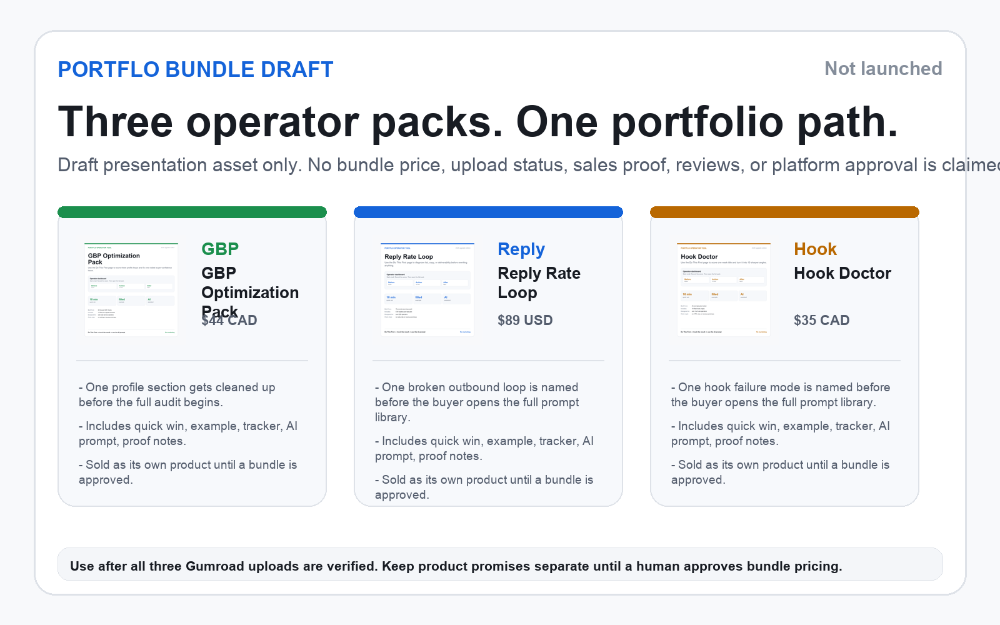
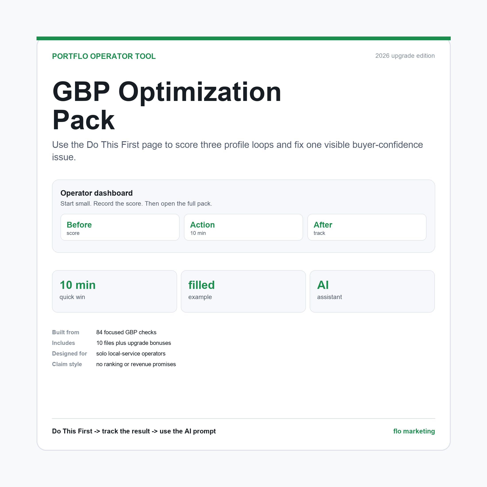
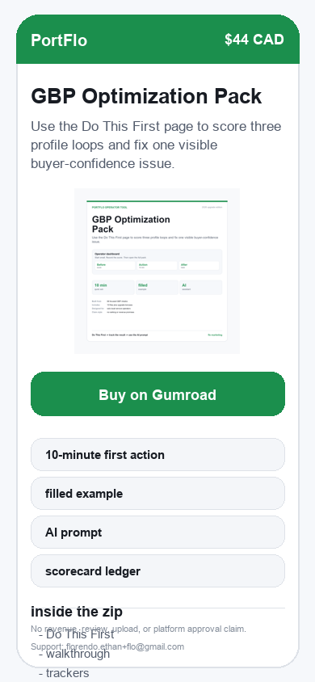
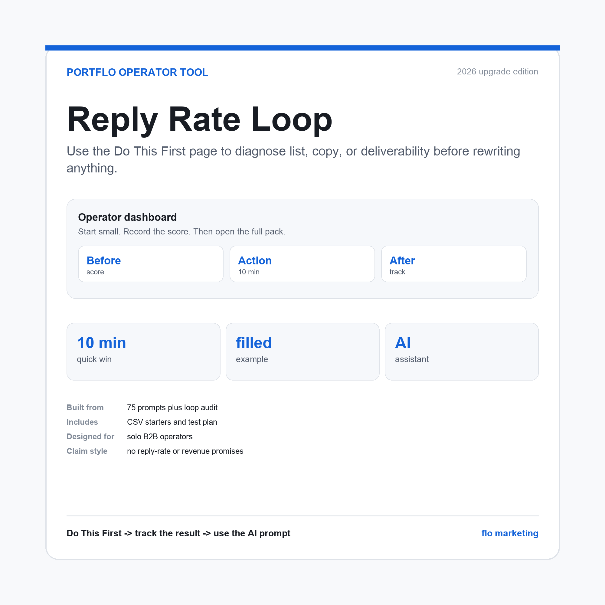
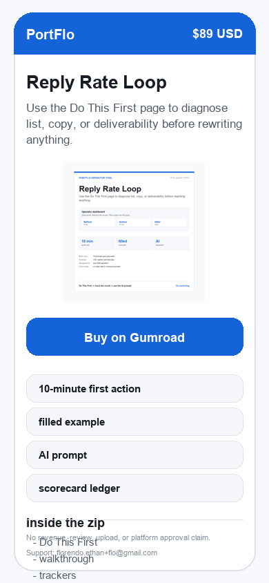
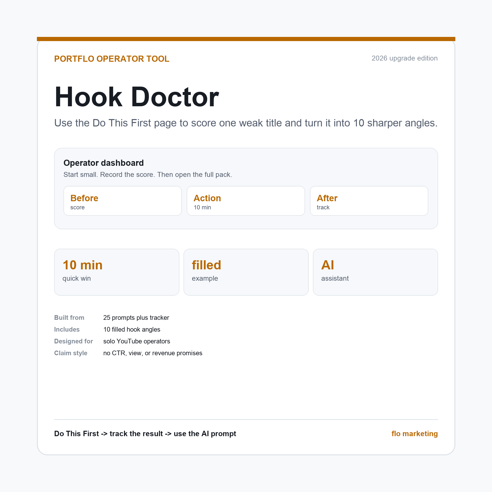
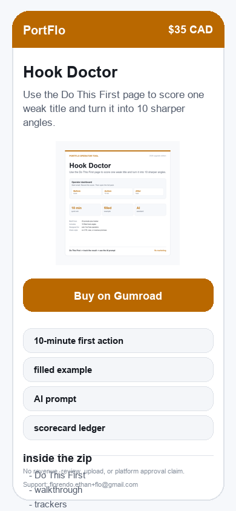

PortFlo now opens faster, proves more, and feels more alive.
This proof page shows the buyer-facing upgrades added across all three digital products: plain-text quick-win cards, Do This First pages, walkthrough assets, filled example demos, filled example PDFs, outcome trackers with private progress evidence and a focused verifier, PDF and worksheet polish gates, data proof scorecard gates, mobile marketplace preview gates, AI prompt markdown, plain-text AI prompts, support/refund help cards, PortFlo decision guide cards with a focused verifier, post-purchase follow-through cards with a focused verifier, offer ladder and bundle-gate verification, honest proof notes, claim-basis mapping with a focused verifier, and rebuilt covers/mockups. No external upload, review, revenue, or platform approval is claimed here.
3products upgraded
30mockups rebuilt
3mobile previews added
1bundle draft asset
Bundle presentation draft
One portfolio view, no bundle launch claim.
PortFlo now uses PORTFLO-BUNDLE-PRESENTATION-ASSETS.md and verify_portflo_bundle_presentation_assets.py before bundle image, proof-page bundle section, portfolio FAQ, marketplace bundle notes, bundle comparison copy, upsell language, or public bundle draft wording changes. The Bundle Draft Integrity Rule keeps exact 1600 x 1000 local/public PNG byte parity, public proof-page image src="../assets/portflo-bundle-presentation.png" and alt="PortFlo bundle presentation draft", draft-only status, the three current products, canonical single-product prices only, and local bundle presentation readiness only. No bundle price, checkout, discount, or savings claim is live.

Offer ladder and bundle gate
Single-product prices stay canonical while the bundle stays draft.
PortFlo Offer Ladder and Bundle Gate: PortFlo now uses PORTFLO-OFFER-LADDER.md and verify_portflo_offer_ladder.py before bundle copy, upsell copy, public bundle FAQs, marketplace bundle notes, product comparison copy, receipt upsells, or offer ladder language changes. The verifier checks the three canonical products, confirms single-product prices stay canonical, protects inspectable-surface routing, the First Result Before Upsell Rule, the No Bundle Teaser Rule, bundle draft status, public FAQ copy, launch docs, marketplace notes, proof page, and no-go claims while keeping the result as local offer readiness only. Do not suggest a second product, bundle, or next-product path until the buyer has completed the current product's first result and identified a new inspectable surface. Keep every bundle mention as a draft planning asset only and do not ask buyers to wait, join a waitlist, request access, or treat a private bundle as available. No bundle price, checkout, discount, or savings claim is live.
Ten-minute quick-win path
Every product's first result now has a focused verifier.
PortFlo now uses PORTFLO-QUICK-WIN-MAP.md and verify_portflo_quick_win_path.py before quick-win card, Do This First PDF, tracker handoff, README-first, source START-HERE files, dashboard first pages, thank-you page first-result copy, marketplace first-result copy, or product-page first-session changes. The verifier checks the plain-text card, Do This First PDF, outcome tracker, buyer README, product source README, buyer zip parity, public docs, and claim boundaries while keeping the result as local first-result readiness only. The Quick-Win First Result Integrity Rule preserves the under-10-minute first action, the in-zip file set, one inspectable buyer-owned surface, no outside tool/account/sign-in/upload/publish requirement before the first result, and a saved tracker/checklist/scorecard result.
Outcome trackers
Buyer progress is now checked as local tracker readiness only.
PortFlo Outcome Tracker Gate: PortFlo now uses PORTFLO-OUTCOME-TRACKER-MAP.md and verify_portflo_outcome_trackers.py before outcome tracker PDF, editable tracker CSV, README tracker routing, public proof copy, marketplace proof copy, launch docs, or buyer tracker-row claims change. The verifier checks tracker PDF and CSV byte parity in every buyer zip, exact before/input/action/after/decision/evidence columns, product-specific progress markers, source README routing, shared launch docs, and no-go claim boundaries while keeping the result as local outcome tracker readiness only.
Product onboarding and README
Every product's open order now has a focused verifier.
PortFlo now uses PORTFLO-ONBOARDING-MAP.md and verify_portflo_onboarding_readme.py before onboarding card, README-first, buyer open order, support/refund onboarding, marketplace receipt first-file, public onboarding copy, or zip manifest changes. The verifier checks buyer onboarding cards, exact buyer README filenames, in-zip READMEs, source READMEs, zip parity, launch docs, marketplace sheet, proof page, thank-you page, and claim boundaries while keeping the result as local onboarding readiness only. Exact README filename rule: GBP uses README-First.txt; Reply Rate Loop and Hook Doctor use README-FIRST.txt.
Filled examples and demos
Every product's example layer now has a focused verifier.
PortFlo now uses PORTFLO-FILLED-EXAMPLE-MAP.md and verify_portflo_filled_examples.py before filled demo text, filled example PDF, demo/PDF pair copy, blank-template map, public proof copy, marketplace example notes, product file manifest, or zip manifest changes. The verifier checks demo text, formatted example PDFs, the Demo/PDF Pair Rule, source READMEs, zip parity, launch docs, marketplace sheet, proof page, and claim boundaries while keeping the result as local example-readiness only. Each demo and PDF must name the same product, same example input, and same claim boundary.
AI assistant prompt layer
Every product's guided prompt now has a focused verifier.
PortFlo AI Assistant Prompt Gate: PortFlo now uses PORTFLO-AI-PROMPT-MAP.md and verify_portflo_ai_prompts.py before 09-AI-ASSISTANT-PROMPT.txt, 09-AI-ASSISTANT-PROMPT.md, buyer README prompt routing, public proof-page prompt copy, marketplace AI-prompt notes, product file manifest, or zip manifest changes. Prompt Pair Rule: the plain-text prompt is the source prompt, and the markdown prompt embeds the exact plain-text prompt before Input Checklist and Safe Use Rules. The verifier checks prompt text, prompt markdown, missing-input rules, buyer-fact-only rules, product file routing, source READMEs, zip parity, launch docs, marketplace sheet, proof page, and claim boundaries while keeping the result as local AI prompt readiness only.
Support and refund clarity
Every product's support path now has a focused verifier.
PortFlo Support and Refund Clarity Gate: PortFlo now uses PORTFLO-SUPPORT-REFUND-MAP.md and verify_portflo_support_refund.py before 13-SUPPORT-REFUND-HELP.txt, refund-page copy, terms copy, thank-you support copy, marketplace support/refund notes, product file manifest, or zip manifest changes. The verifier checks support/refund cards, buyer zips, source READMEs, public product pages, policy pages, launch docs, marketplace sheet, proof page, and claim boundaries while keeping the result as local support/refund readiness only.
Portfolio navigation and decision guide
Every product's chooser path now has a focused verifier.
PortFlo Portfolio Navigation and Decision Guide Gate: PortFlo now uses PORTFLO-DECISION-GUIDE.md and verify_portflo_decision_guide.py before portfolio chooser copy, product card fit copy, buyer README decision routing, thank-you first-file copy, marketplace product picker copy, product file manifest, or zip manifest changes. The verifier checks 14-PORTFLO-DECISION-GUIDE.txt, source READMEs, buyer README routing, product zip parity, the portfolio index, the thank-you page, launch docs, marketplace sheet, proof page, and claim boundaries while keeping the result as local decision-guide readiness only.
Post-purchase follow-through
Every product's Day 0 to Day 14 path now has a focused verifier.
PortFlo Post-Purchase Follow-Through Gate: PortFlo now uses PORTFLO-POST-PURCHASE-MAP.md and verify_portflo_post_purchase_follow_through.py before thank-you page copy, Gumroad receipt notes, buyer README after-download routing, support/refund next-step copy, marketplace after-purchase notes, product file manifest, or zip manifest changes. The verifier checks 15-POST-PURCHASE-FOLLOW-THROUGH.txt, source READMEs, buyer README routing, product zip parity, the thank-you page, launch docs, marketplace sheet, proof page, the First Result Before Next Product Rule, and claim boundaries while keeping the result as local post-purchase readiness only. No review is required for support, refunds, updates, or future help. Do not suggest a second product, bundle, or next-product path until the buyer has completed the current product's first result and identified a new inspectable surface.
Portfolio brand system
PortFlo, FloatOS, and Float Clouds now have one naming gate.
PortFlo now uses PORTFLO-BRAND-SYSTEM.md and verify_portflo_brand_system.py before product names, cloud names, marketplace copy, source README launch truth, proof-page language, or shared handoff language changes. PortFlo is the product portfolio layer. FloatOS remains the creator hub. PortFlo Express 26 is the portfolio upgrade line, while ExFlo 28 upgrades FloatOS.
Covers and gallery QA
Covers, 30 mockups, mobile previews, and public asset mirrors now have a focused verifier.
PortFlo now uses PORTFLO-GALLERY-MANIFEST.md and verify_portflo_gallery_assets.py before cover, gallery mockup, mobile preview, bundle presentation, marketplace gallery order, or visual proof copy changes. The verifier checks high-resolution local assets, public static-page copies, sequential mockup names, thumbnail-readability rules, and visual claim boundaries without claiming external upload or platform approval.
Mobile marketplace previews
Phone-sized preview assets now have their own parity gate.
PortFlo now uses PORTFLO-MOBILE-MARKETPLACE-PREVIEWS.md and verify_portflo_mobile_marketplace_previews.py before mobile preview, product-page mobile layout, proof-page mobile-preview, Gumroad receipt image note, Whop copy, Etsy copy, or marketplace gallery note changes. The verifier checks exact 390 x 844 local PNGs, public mirror byte parity, buyer zip inclusion, proof-page references, visible preview captions, and product-page mobile markers while keeping the result as local mobile preview readiness only. The Generator Preservation Rule keeps the Mobile Preview Standard, Proof Alt Label Rule, Visible Preview Caption Rule, public-page mobile markers, human-only gates, and no-upload/no-result boundaries together in generated source.
Sales page visual hierarchy
Product, price, CTA, cover, refund, support, and policy links now have a focused verifier.
PortFlo now uses PORTFLO-SALES-PAGE-HIERARCHY.md and verify_portflo_sales_pages.py before product-page hero, portfolio index-card, CTA-label, cover-placement, support/refund, product FAQ, Gumroad receipt, Whop copy, Etsy copy, or marketplace description changes. The verifier checks product, price, CTA, cover, refund, support, and policy links while protecting scanability without turning local page polish into upload, review, revenue, buyer-result, or platform-approval proof. The Generator Preservation Rule keeps the Above-The-Fold Rule, Hero Outcome Before File List Rule, Direct Checkout Label Rule, support/refund path, visual claim boundary, and human-only gates in generated source.
PDF and worksheet polish
Buyer PDFs, CSV headers, dashboards, and xlsx workbooks now have a focused verifier.
PortFlo now uses PORTFLO-PDF-WORKSHEET-POLISH.md and verify_portflo_pdf_worksheet_polish.py before product PDF, dashboard, CSV worksheet, xlsx workbook, Gumroad receipt file-description, Whop copy, Etsy copy, or buyer-file listing changes. The verifier checks page minimums, extracted PDF text, CSV headers, xlsx workbook structure, and local-vs-zip parity while keeping the result as local buyer-file readiness only. The Generator Preservation Rule keeps dashboard readable-PDF checks, canonical price text, fully filled CSV starter rows, xlsx workbook structure, byte parity, and no-upload/no-proof boundaries together in generated source.
Data proof and scorecards
Scorecard rows now prove work completed, not external buyer outcomes.
PortFlo now uses PORTFLO-DATA-PROOF-SCORECARDS.md and verify_portflo_data_proof_scorecards.py before scorecard proof ledger, outcome tracker proof, dashboard proof, public proof, Gumroad receipt proof, Whop copy, Etsy copy, or marketplace proof changes. The verifier checks scorecard PDF text, CSV rows, required product signals, private evidence wording, and local-vs-zip parity while keeping the result as local scorecard readiness only. The Generator Preservation Rule keeps Before input, Buyer action, After check, and Evidence to keep together as private work evidence, not external results, and preserves no-upload/no-result boundaries in generated source.
Claim basis
Proof stays tied to files, process, or verified evidence.
PortFlo Proof and Research Basis Gate: PortFlo now uses PORTFLO-PROOF-RESEARCH-BASIS.md and verify_portflo_proof_research_basis.py before public proof notes, listing claims, product FAQs, Gumroad receipt copy, Whop copy, Etsy copy, or support copy based on a buyer tracker. The verifier checks claim basis rules, product-specific limits, source README routing, launch docs, marketplace notes, proof-page copy, and no-go boundaries while keeping the result as local proof/research readiness only. Tracker rows, checkout reachability, and file counts do not prove buyer results.
Marketplace copy and SEO
Each listing keeps one niche and one buyer intent.
PortFlo Marketplace Copy and SEO Gate: PortFlo now uses PORTFLO-MARKETPLACE-COPY-SEO-MAP.md and verify_portflo_marketplace_copy_seo.py before public marketplace titles, descriptions, tags, FAQs, Gumroad receipt copy, Whop copy, Etsy copy, or SEO snippets. The verifier checks product intent, safe title angles, source README routing, launch docs, marketplace notes, proof-page copy, the No Stale Traffic Tactic Rule, and no-go boundaries while keeping the result as local marketplace copy readiness only. Gumroad stays first; Whop and Etsy remain optional human-gated routes until policy checks, live URLs, and evidence rows exist.
Feedback and review loop
Buyer friction becomes product fixes, not fake proof.
PortFlo Feedback and Review Loop Gate: PortFlo now uses PORTFLO-FEEDBACK-REVIEW-LOOP.md, PORTFLO-FEEDBACK-LOG.csv, and verify_portflo_feedback_review_loop.py before turning support, refund, Day 7, Day 14, review, testimonial, quote, screenshot, name, or story notes into product upgrades or public copy. Reviews are never required for support or refunds, testimonials stay private until permission and evidence are logged, and the result is local feedback/review readiness only.
Product file completeness
Every product zip now has exact count, size, order, and byte-parity protection.
PortFlo Product File Completeness Gate: PortFlo now uses PORTFLO-PRODUCT-FILE-MANIFEST.md and verify_portflo_product_file_completeness.py before product build folders, buyer zip contents, zip manifests, source product READMEs, buyer README file maps, marketplace file lists, or public proof copy that names product contents. The verifier checks exact current zip sizes, expected file counts, first-file order, local build-to-zip byte parity, required shared files, product-specific core files, README routing, launch/proof docs, and no-upload-claim boundaries while keeping the result as local product file completeness only.
Build and zip integrity
Product zips now have their own verifier.
PortFlo now uses PORTFLO-BUILD-ZIP-INTEGRITY.md and verify_portflo_build_zip_integrity.py to check product zips apart from the FloatOS founder bundle. The verifier checks exact file counts, required members, clean zip names, deflate compression, source README pointers, and product build script compilation.
Link and checkout QA
Reachable links do not become upload claims.
PortFlo now uses PORTFLO-LINK-CHECKOUT-QA.md and verify_portflo_links_checkout.py before public page CTA, policy link, Gumroad checkout, Whop URL, Etsy URL, or receipt-copy changes. The verifier checks local links, live product pages, canonical Gumroad checkouts, favicon routes, source README pointers, and stale checkout text while keeping uploaded-file parity human-only.
Privacy and compliance
Buyer files get a product-only secret scan.
PortFlo now uses PORTFLO-PRIVACY-COMPLIANCE-SECRET-SCAN.md and verify_portflo_privacy_compliance.py before policy page, marketplace compliance, support/refund, buyer feedback, or product zip upload-file checks. The verifier scans buyer zips, source docs, public pages, PDFs, CSVs, and workbook XML for secret patterns while protecting review, testimonial, privacy, refund, CAN-SPAM, Whop, Etsy, and uploaded-file parity boundaries. Do not send passwords, private client files, account access, private exports, or secret keys.
Analytics and conversion measurement
Checkout opens, purchases, refunds, and buyer feedback stay separate.
PortFlo now uses PORTFLO-ANALYTICS-CONVERSION-MEASUREMENT.md and verify_portflo_analytics_measurement.py before product measurement copy, thank-you-page edits, marketplace source labels, Gumroad receipt notes, feedback reporting, refund reporting, or public result language. The verifier keeps page views, checkout opens, purchases, refunds, Day 14 retests, and feedback logs separate so local QA never becomes revenue, conversion, refund, CTR, ranking, reply-rate, review, testimonial, upload-parity, or buyer-result proof.
Regression, resilience, and ExFlo sync
PortFlo-owned QA is separate from ExFlo founder-bundle packaging.
PortFlo now uses PORTFLO-REGRESSION-RESILIENCE-EXFLO-SYNC.md and verify_portflo_regression_resilience.py before finishing a full PortFlo rotation, restarting at lane 01, changing shared handoff language, or classifying full-gauntlet blockers. The verifier confirms the product-side maps, READMEs, launch docs, proof page, dialogue, lock state, and known owner boundaries so PortFlo can report product readiness without claiming ExFlo package refresh, Gumroad upload parity, Whop publish, Etsy publish, revenue, conversion, review, testimonial, buyer result, or platform approval.

GBP upgrade proof
GBP Optimization Pack
Use the Do This First page to score three profile loops and fix one visible buyer-confidence issue.
Built from84 focused GBP checks
Includes10 files plus upgrade bonuses
Designed forsolo local-service operators
Claim styleno ranking or revenue promises
Added to zip: plain-text 10-minute quick-win card, Do This First, walkthrough page, walkthrough GIF, transcript, filled example demo, filled example PDF, outcome tracker PDF, outcome tracker CSV with before/input/action/after/evidence columns, AI Assistant Prompt markdown, plain-text AI prompt, Honest Proof Notes, PDF and Worksheet Index, Scorecard Proof Ledger, support/refund help card, PortFlo decision guide card, post-purchase follow-through card, mobile marketplace preview, rebuilt cover, 10 rebuilt mockups.

GBP Optimization Pack mobile marketplace preview - local 390 x 844 preview only

Reply upgrade proof
Reply Rate Loop
Use the Do This First page to diagnose list, copy, or deliverability before rewriting anything.
Built from75 prompts plus loop audit
IncludesCSV starters and test plan
Designed forsolo B2B operators
Claim styleno reply-rate or revenue promises
Added to zip: plain-text 10-minute quick-win card, Do This First, walkthrough page, walkthrough GIF, transcript, filled example demo, filled example PDF, outcome tracker PDF, outcome tracker CSV with before/input/action/after/evidence columns, AI Assistant Prompt markdown, plain-text AI prompt, Honest Proof Notes, PDF and Worksheet Index, Scorecard Proof Ledger, support/refund help card, PortFlo decision guide card, post-purchase follow-through card, mobile marketplace preview, rebuilt cover, 10 rebuilt mockups.

Reply Rate Loop mobile marketplace preview - local 390 x 844 preview only

Hook upgrade proof
Hook Doctor
Use the Do This First page to score one weak title and turn it into 10 sharper angles.
Built from25 prompts plus tracker
Includes10 filled hook angles
Designed forsolo YouTube operators
Claim styleno CTR, view, or revenue promises
Added to zip: plain-text 10-minute quick-win card, Do This First, walkthrough page, walkthrough GIF, transcript, filled example demo, filled example PDF, outcome tracker PDF, outcome tracker CSV with before/input/action/after/evidence columns, AI Assistant Prompt markdown, plain-text AI prompt, Honest Proof Notes, PDF and Worksheet Index, Scorecard Proof Ledger, support/refund help card, PortFlo decision guide card, post-purchase follow-through card, mobile marketplace preview, rebuilt cover, 10 rebuilt mockups.

Hook Doctor mobile marketplace preview - local 390 x 844 preview only
QA evidence
Protected by local checks: python3 mmo-3.0/products/live_check.py, python3 mmo-3.0/products/verify_portflo_brand_system.py, python3 mmo-3.0/products/verify_portflo_gallery_assets.py, python3 mmo-3.0/products/verify_portflo_bundle_presentation_assets.py, python3 mmo-3.0/products/verify_portflo_offer_ladder.py, python3 mmo-3.0/products/verify_portflo_mobile_marketplace_previews.py, python3 mmo-3.0/products/verify_portflo_quick_win_path.py, python3 mmo-3.0/products/verify_portflo_outcome_trackers.py, python3 mmo-3.0/products/verify_portflo_proof_research_basis.py, python3 mmo-3.0/products/verify_portflo_marketplace_copy_seo.py, python3 mmo-3.0/products/verify_portflo_onboarding_readme.py, python3 mmo-3.0/products/verify_portflo_filled_examples.py, python3 mmo-3.0/products/verify_portflo_ai_prompts.py, python3 mmo-3.0/products/verify_portflo_support_refund.py, python3 mmo-3.0/products/verify_portflo_decision_guide.py, python3 mmo-3.0/products/verify_portflo_post_purchase_follow_through.py, python3 mmo-3.0/products/verify_portflo_sales_pages.py, python3 mmo-3.0/products/verify_portflo_pdf_worksheet_polish.py, python3 mmo-3.0/products/verify_portflo_data_proof_scorecards.py, python3 mmo-3.0/products/verify_portflo_product_file_completeness.py, python3 mmo-3.0/products/verify_portflo_analytics_measurement.py, python3 mmo-3.0/products/verify_portflo_regression_resilience.py, python3 mmo-3.0/products/ultimate_28_check.py, and PortFlo runner checks. The proof basis map blocks unsupported claims before marketplace copy changes; the marketplace copy verifier blocks title, SEO, route, and optional-marketplace drift. Final pass status is recorded in the PortFlo sync log; shared FloatOS dialogue updates when the ExFlo lock permits.